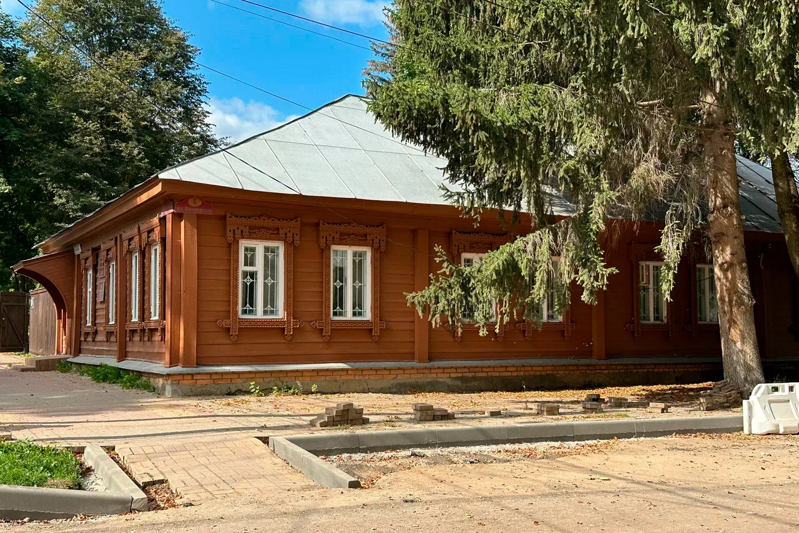

Рождение в Москве.

Детство и образование
Марина Ивановна Цветаева родилась 8 октября 1892 года в Москве. Её отец, Иван Владимирович Цветаев, был филологом и искусствоведом, основателем Музея изящных искусств (ныне ГМИИ имени А. С. Пушкина). Мать, Мария Александровна Мейн, была пианисткой. В семье большое значение придавали образованию, музыке и литературе.
Цветаева начала писать стихи в детстве. В 1910 году вышел её первый сборник «Вечерний альбом». В 1912 году она вышла замуж за Сергея Эфрона.
В 1922 году Цветаева уехала из Советской России и жила в эмиграции, в том числе в Чехословакии и Франции. В 1939 году вернулась в СССР. 31 августа 1941 года поэтесса умерла в Елабуге.
Хронология жизни
Выход сборника «Вечерний альбом».
Брак с Сергеем Эфроном.
Начало эмиграции.
Возвращение в СССР.
Последний год жизни в Елабуге.
Цветаева занимает особое место в литературе Серебряного века. Её поэзия соединяет личные переживания с размышлениями об истории, любви, родине и назначении искусства.